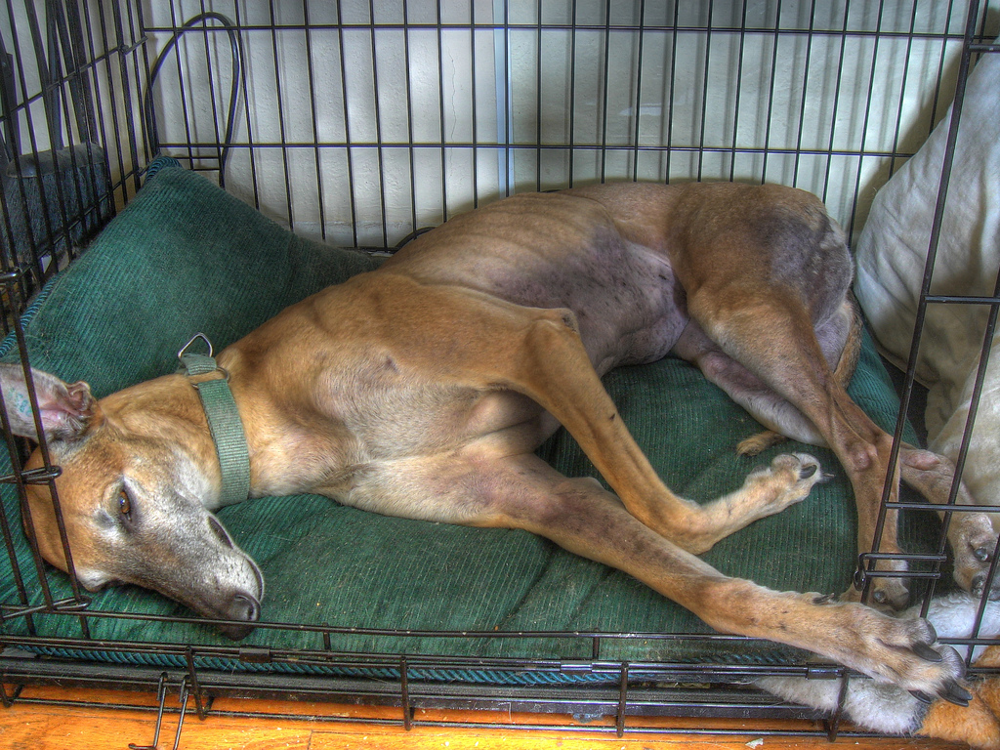
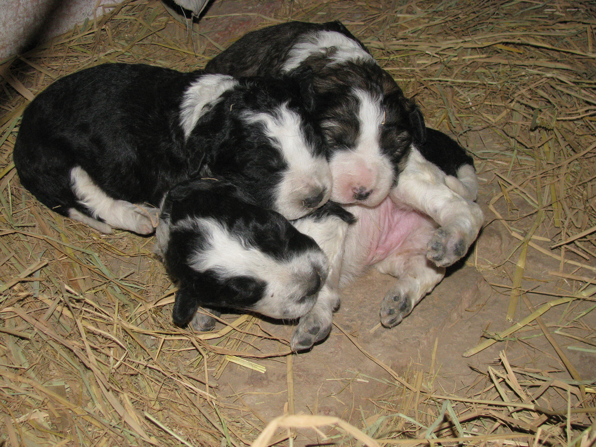
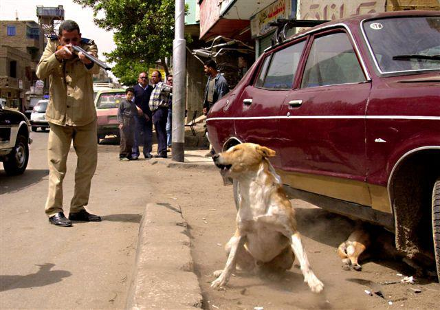

Animal cruelty is a big issue that happens aorund the world but the bigger issue is the fact that in some places around the world they dont do anything about it. Here are some of the places that dont do much when it comes to the heath of animals.
Animal in Asia are the most mistreated in the world they dont have many laws protecting animals from cruelty. To reduce the population of stray dogs and cats they organize animal killing compaigns. It's estimated that in china they kill ten million dogs and fore million cats a year just for their meat most are cooked while they are still alive. In asia they do something call bear bile farming wich is a farming system use to extract bile from the gallbladder of living bears for the use of medicie. They are kept in small cages so small that they cant even move or stand in all fours.
name at rest Taken on September 11, 2006 by Rob!on flickr
Greece is known for feeding rat poison to stray dogs and cat. In the 2004 Olympic Games the government was suspected of being part of poisoing 80% of an estimate of 30-50,000 strays just to clean up the street for the event. In the greek cup final in 2003 a riot broke out after the lost from the other team a husky was doused in fuel and set on fire becaues of its white and black fur. Most pets that are sold in Greek pet shops come from horrible puppy frams in Hungary were they are taken from there mothers at just 4-5 weeks old and are kept in cages most of the puppys wont make it to the shops becaues of the abuse they go through.
name Pure Cuteness Taken on January 6, 2009 by BonniePutPut
Egypt was knew for the respect that they give to animals they even treated them like loyalty but now all of that has change. Egype has little to no laws when it comes to animal cruelty they often poisoned, beat, and even shot at stays in some cases they fed food mix with glass to strays that end up damaging thire insides. Some animals like donkeys are worked to the point of death. They are made to were homemade equipment that are not even the right size so it ends up hurting and wounding the animal some dont get thier wounds chect wich ends up getting infected and ends up being more pain full for the animal. 
Photo credit: S.P.A.R.E website:sparelivies.org